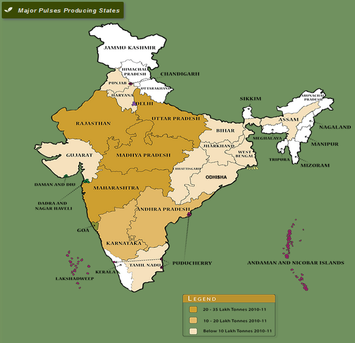

Farmr.
Pulses are consumed as Dal, which is a cheap source of plant protein. These are consumed because of body building properties having presence of various amino acids. These also have medicinal properties. By products of pulses like leaves, pod coats and bran are given to animals in the form of dry fodder. Some pulse crops like Gram, Lobia, Urdbean & Moongbean are fed to animals as green fodder. Moong plants are also used as green manure which improve soil health and adds nutrient into the soil.
A number of pulse crops are grown in India and world. Among the crops, major ones are Gram, Pigeonpea, Lentil, Fieldpeas etc. According to history, the origin of Gram is in South West Asia – probably Afghanistan and Persia, Pigeonpea in Africa, Lentil in Turkey to South Iran and Fieldpeas in Mediterranean Region of Southern Europe and Western Asia.
Important Major Pulses Growing Zones / States in IndiaVarietal Development programme of pulses got strengthened in 1967 with the initiation of All-India Co-ordinated Research Improvement Programme. Through this programme, the varieties suitable for across the country i.e. agro-climatic zones: Northern Hills Zone – J&K, Himachal Pradesh, North West of Uttar Pradesh; North West Plain Zone – Haryana, Punjab, Rajasthan, Gujarat, western Uttar Pradesh; North East Plain Zone – eastern Uttar Pradesh, Bihar, West Bengal, Assam, Tripura, Mizoram, Northern Odisha; Central Zone – Madhya Pradesh, Maharashtra, Parts of Karnataka, Andhra Pradesh; South Zone – Andhra Pradesh, Tamil Nadu, Kerala, Karnataka and southern Odisha have been developed.
Climate RequirementPulse crops are cultivated in Kharif, Rabi and Zaid seasons of the Agricultural year. Rabi crops require mild cold climate during sowing period, during vegetative to pod development cold climate and during maturity / harvesting warm climate. Similarly, Kharif pulse crops require warm climate throughout their life from sowing to harvesting. Summer pulses are habitants of warm climate. Seed is required to pass many stages to produce seed like germination, seedling, vegetative, flowering, fruit setting, pod development and grain maturity / harvesting.
Area, Production And Yield Of Major Pulse Crops Growing States In IndiaThere was 239 lakh ha area in India at triennium ending 2010-11, which was mainly contributed by Madhya Pradesh, Rajasthan, Maharashtra, Karnataka and Uttar Pradesh. From this area, 158 lakh tonnes production of pulse was received. The major contributors of this production were Madhya Pradesh, Maharashtra, Uttar Pradesh, Rajasthan and Andhra Pradesh. During this period, productivity of pulses was recorded as 661 kg / ha with highest in Punjab (905 kg/ha), Haryana (891), Bihar (839), Uttar Pradesh (823) and West Bengal (811).
